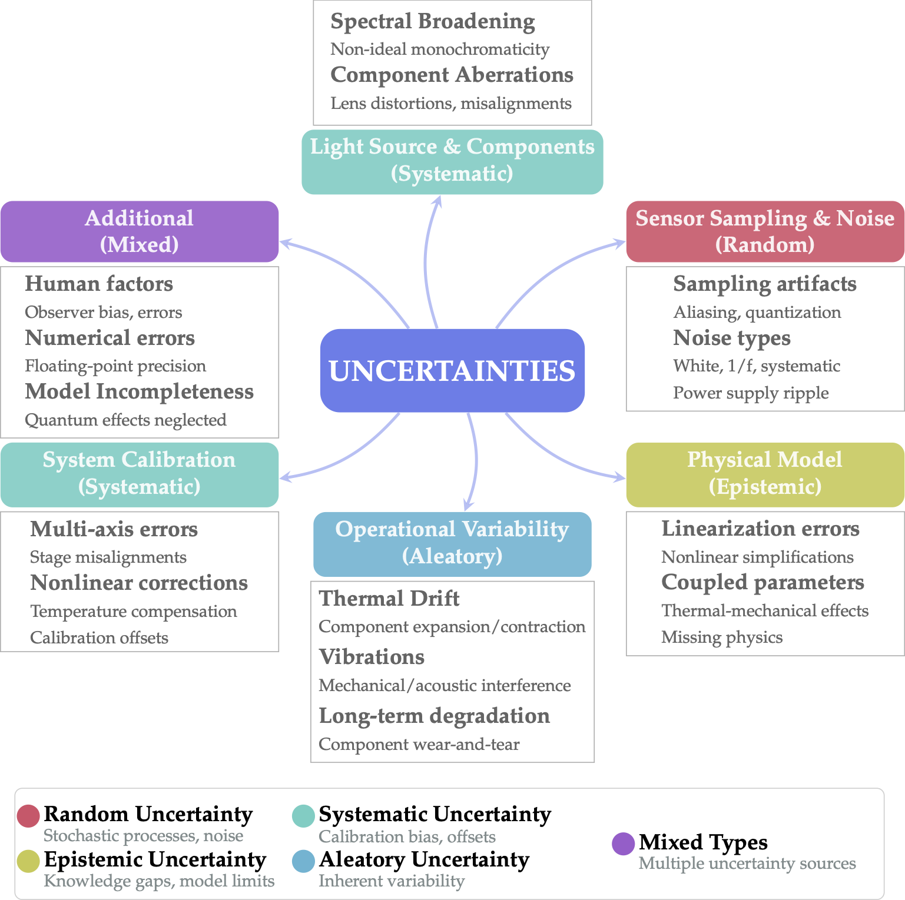
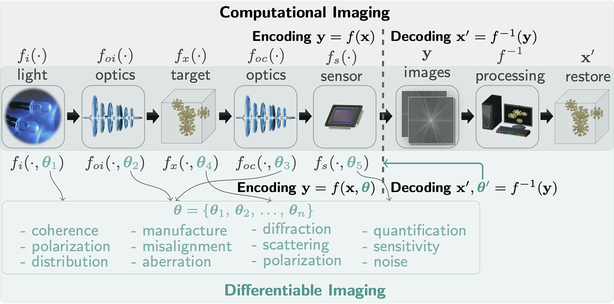

Differentiable Imaging
Advanced Physics Research, 2023
Advanced Devices & Instrumentation, 2025
Abstract
Differentiable Imaging is an innovative framework that seamlessly integrates optical hardware with computational algorithms to address critical challenges in traditional computational imaging. By leveraging differentiable programming and automatic differentiation, this approach enables end-to-end optimization of complete imaging systems while accounting for real-world hardware imperfections. The result is simplified hardware designs, enhanced imaging performance, and improved system robustness across diverse imaging modalities. The differentiable linkage among all system components ultimately enables genuine co-design in computational imaging.
Introduction
|  |
|---|
| Uncertainties that lead to mismatch between real systems and numerical modeling. |
Computational imaging has made significant advances but continues to face substantial challenges from system uncertainties. These uncertainties can be categorized into five key areas:
- System Imperfections: Deviations in hardware component specifications and performance
- Mechanical Issues: Physical misalignments, vibrations, and structural instabilities
- Sensor Limitations: Electronic noise, quantization errors, and detector nonlinearities
- Operational Variability: Epistemic and aleatory uncertainties arising from dynamic environmental conditions
- Numerical Errors: Computational approximations and discretization effects in modeling
Effective co-design requires multi-variable optimization with accurate mathematical modeling of real systems. These uncertainties not only hinder precise numerical modeling but also complicate inverse problem solving, creating a fundamental bottleneck in computational imaging advancement.
Technical Framework
|  |
|---|
| Comparison of Computational Imaging and Differentiable Imaging. |
Differentiable imaging 1 fundamentally redefines co-design by integrating physically accurate models within machine learning architectures for comprehensive end-to-end optimization. This framework specifically targets uncertainties that cause critical mismatches between real-world systems and their numerical representations. Through differentiable programming and automatic differentiation, these uncertainties are explicitly modeled and their impacts systematically mitigated.
By leveraging differentiable programming, differentiable imaging offers an elegant solution to the limitations of conventional computational imaging. Rather than pursuing increasingly complex yet cumbersome physical models, differentiable imaging fundamentally reconceptualizes the imaging process. It transforms the traditional encoding model $y=f(x)$ into a more comprehensive formulation $y=f(x, \theta)$, where $\theta$ represents a parameter set specifically designed to address and compensate for mismatches between physical systems and numerical models.
The complete forward model captures the entire imaging pipeline through a series of interconnected transformations:
\[\begin{equation} y = f(x, \theta), \qquad f = f_{noise} \circ f_c \circ f_{oc} \circ f_x \circ f_{oi} \circ f_i, \end{equation}\]where the function composition operator $\circ$ connects each system component, and $\theta = { \theta_c, \theta_{oc}, \ldots }$ encompasses all system parameters. Each component corresponds to specific physical processes within the imaging system, from illumination characteristics through object interactions to sensor behavior and noise sources.
This comprehensive forward model enables the formulation of an elegant inverse problem that simultaneously optimizes system parameters while reconstructing images:
\[\begin{equation} x^*, \theta^* = \text{argmin}_{x, \theta} \mathcal{L}(f(x, \theta), y) + \sum_{n=1}^N \beta_n \mathcal{R}_n(x) \\ s.t. \quad x \in \Omega_x, \theta \in \Omega_{\theta} \end{equation}\]Here, $\mathcal{L}(f(x, \theta), y)$ represents the fidelity term that quantifies the discrepancy between the model predictions and measured data. While the ${\ell_2}$ loss $\mathcal{L}(f(x, \theta), y) = |f(x, \theta) - y|^2$ is commonly used due to its mathematical tractability and compatibility with Gaussian noise assumptions, the selection of an appropriate fidelity function depends critically on the specific imaging conditions and noise characteristics.
For imaging scenarios dominated by Poisson noise (common in low-photon-count regimes like fluorescence microscopy), negative log-likelihood or Kullback-Leibler divergence-based losses often prove more effective. In cases with outliers or heavy-tailed noise distributions, robust loss functions such as Huber loss or ${\ell_1}$ norm can provide superior performance. Specialized applications may benefit from composite or perceptual loss functions that incorporate domain-specific knowledge.
The regularization terms $\mathcal{R} _n(\cdot)$ weighted by factors $\beta _n$ impose prior knowledge about the solution space, while the physical constraints $\Omega _{x}$ and $\Omega _{\theta}$ ensure that solutions remain within realistic physical bounds.
The framework introduces two primary innovations:
- System Imperfection Modeling: Direct integration of hardware imperfections into imaging models (represented as $f(x,\theta)$ where $\theta$ encapsulates uncertainty parameters)
- Differentiable Optimization: Implementation of inverse problem solving using differentiable optimization algorithms, enabling gradient-based optimization across the entire imaging pipeline
This integrated methodology facilitates closed-loop optimization, resulting in robust, high-performance imaging systems that maintain effectiveness despite real-world imperfections.
Research Achievements
Since 2021, our exploration of differentiable imaging across various domains has led to significant advancements:
| Techniques | Uncertainties | Achievements |
|---|---|---|
| Differentiable Holography2,3 | Defocus distance; Complex light-wave interaction; | Single-shot wavefield imaging; high-density Single-shot 3D PIV |
| Differentiable Lensless Imaging4 | Sensor scanning positions; defocus distances; | Pixel-super resolution; High-performance imaging; Compact and cost-effective hardware |
| Uncertainty-Aware Fourier Ptychography5 | Modelable: misalignment, element aberrations; Statistical: noise, low quality data |
Simplified measurements; resolution beyond traditional physical limits; expanded system functions |
Our research has revealed three fundamental principles:
- Precision in Modeling: The accuracy of optical system modeling is paramount to successful implementation
- Physics-Grounded Algorithms: Algorithms rooted in fundamental physical principles ensure computational efficiency, system robustness, and result interpretability
- System-Algorithm Synergy: Effective interplay between physical hardware and computational models is crucial for both imaging quality and optimal system design
Differentiable imaging holds potential for significant expansion beyond current applications. Future developments may include integration with digital twin technology and contributions to AI for Science initiatives 6, opening new paradigms for scientific discovery and technological innovation.
Related Publications
-
Ni Chen, Liangcai Cao, Ting-Chung Poon, Byoungho Lee, Edmund Y. Lam, “Differentiable Imaging: A New Tool for Computational Optical Imaging,” Advanced Physics Research, 2023. ↩
-
Ni Chen, Congli Wang, Wolfgang Heidrich, “∂H: Differentiable Holography,” Laser & Photonics Reviews, 2023. ↩
-
Yang Wu, Jun Wang, Sigurdur Thoroddsen, Ni Chen*, “Single-Shot High-Density Volumetric Particle Imaging Enabled by Differentiable Holography,” IEEE Transactions on Industrial Informatics, 2024. ↩
-
Ni Chen, Edmund Y. Lam, “Differentiable pixel-super-resolution lensless imaging,” Optics Letters, 2025. ↩
-
Ni Chen, Yang Wu, Chao Tan, Liangcai Cao, Jun Wang, Edmund Y. Lam, “Uncertainty-Aware Fourier Ptychography,” Light, Science & Applications, 2025. ↩
-
Ni Chen, David J. Brady, Edmund Y. Lam, “Differentiable Imaging: progress, challenges, and outlook,” Advanced Devices & Instrumentation, 2025. ↩